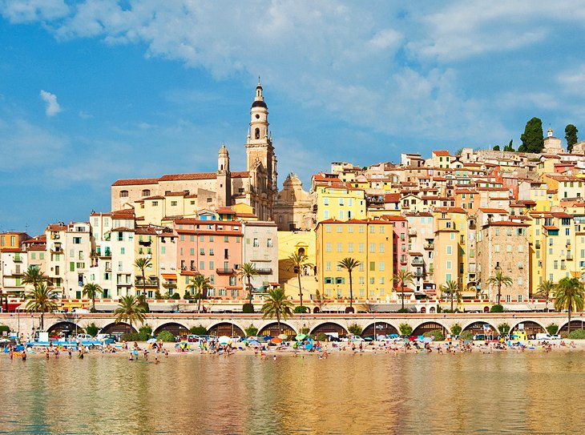

France
1. Eiffel Tower
The symbol of Paris, the Eiffel Tower is a feat of ingenuity as much as it is a famous landmark. This structure of 8,000 metallic parts was designed by Gustave Eiffel as a temporary exhibit for the World Fair of 1889. Originally loathed by critics, the 320-meter-high tower is now a beloved and irreplaceable fixture of the Paris skyline.
The Eiffel Tower's gracefulness has earned it the nickname of "Iron Lady." Visitors are impressed by the tower's delicate airiness despite its monumental size and the breathtaking panoramas at each of the three levels.
Tourists can dine with a view at the first level or indulge at the Michelin-starred Le Jules Verne restaurant on the second level. At the exhilarating height of 276 meters, the top level offers a sweeping outlook over the city of Paris and beyond. Vistas extend as far as 70 kilometers on a clear day.
Accommodation: Where to Stay in Paris: Best Areas and Hotels
2. Musée du Louvre
In a stately palace that was once a royal residence, the Louvre Museum ranks among the top European collections of fine arts. Many of Western Civilization's most famous works are found here, including the Mona Lisa by Leonardo da Vinci, the Wedding Feast at Cana by Veronese, and the 1st-century-BC Venus de Milo sculpture. The collection owes its wealth to the contributions of various kings who lived in the Louvre. Other pieces were added as a result of France's treaties with the Vatican and the Republic of Venice, and from the spoils of Napoléon I. The Louvre displays around 35,000 artworks, including countless masterpieces. It's impossible to see it all in a day or even in a week. Take a private guided tour or focus on a shortlist of key artworks for the most rewarding experience. Accommodation: Where to Stay in Paris: Best Areas and Hotels

3. Château de Versailles
The Château de Versailles emblematizes the grandeur of the French monarchy prior to the fall of the Ancien Régime. This UNESCO-listed monument represents a glorious moment of France's history, under the reign of Louis XIV (known as the "Sun King"), when the palace set the standard for princely courts in Europe. Beginning in 1661, Louis XIV transformed his father's hunting lodge (a small château) into an opulent royal palace. To realize the vision of Louis XIV, esteemed architect Louis Le Vau renovated the château of Louis XIII in an elegant neoclassical manner. Later in the 17th century, Jules Hardouin-Mansart created the lavish Baroque interiors, including the Hall of Mirrors. The most spectacular space in the palace is the Hall of Mirrors, where courtiers waited for an audience with His Majesty. This dazzling gallery sparkles with sunlight that enters through the windows and is reflected off hundreds of ornamental mirrors, while dozens of glittering chandeliers and gilded details make the overall impression even more marvelous.

4. Côte d'Azur
The most fashionable stretch of coastline in France, the Côte d'Azur extends from Saint-Tropez to Menton near the border with Italy. Côte d'Azur translates to "Coast of Blue," a fitting name to describe the Mediterranean's mesmerizing cerulean waters. To English speakers, this glamorous seaside destination is known as the French Riviera, words that have a ring of sun-drenched decadence. During summer, the seaside resorts are packed with beach lovers and sun-worshippers. The rich and famous are also found here in their lavish villas and luxury yachts. The town of Nice has panoramic sea views and stellar art museums. Cannes is famous for its celebrity film festival and legendary hotels. The best sandy beaches are found in Antibes, which also has an atmospheric Old Town and superb museums. Saint-Tropez offers fabulous public and private beaches along with the charm of a Provençal fishing village, while Monaco seduces with its exclusive ambience and stunning scenery. Accommodation: Where to Stay in Côte d'Azur
5. Mont Saint-Michel
Rising dramatically from a rocky islet off the Normandy coast, the UNESCO-listed Mont Saint-Michel is one of France's most striking landmarks. This "Pyramid of the Seas" is a mystical sight, perched 80 meters above the bay and surrounded by imposing defensive walls and bastions. The main tourist attraction, the Abbaye du Mont Saint-Michel is a marvel of medieval architecture with soaring Gothic spires. Visitors are awed by the serene beauty of the Abbey Church, with its harmonious Romanesque nave and ornate high-vaulted choir. Since it was built in the 11th century, the Abbey Church has been an important Christian pilgrimage destination, known as "The Heavenly Jerusalem." Modern-day pilgrims are still inspired by Mont Saint-Michel and continue the tradition of crossing the bay by foot as it was done in the Middle Ages